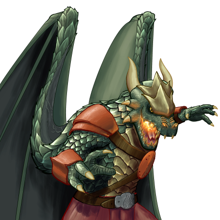
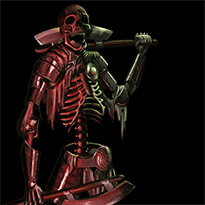
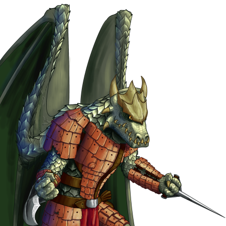
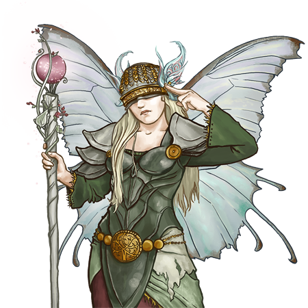

The Lands Unknown..
|  |
Drake Burners are the few and the proud, who have inherited most truly the strengths of their remote ancestors, especially the ability to breathe fire. This, coupled with their sheer size and clawed hands makes for a dangerous foe in combat.
|  |
In life, the abominations known as ‘Deathblades’ were masters of combat, soldiers who were both lithe and deadly. Their new masters, recognizing this, outfit them to match the skills they once had. Though frail, these monsters are much faster than the rest of their kind, both on foot and with their blades.
|  |
Drake Fighters wield curved war blades, and possess the fire-breathing skills of their ancestors. They can also fly, which is troubling to any foe. Their great strength, coupled with their hardened scales, is rightly frightening to swordsman of any other race.
|  |
Rarely seen, the sage-like Sylphs are masters of both their faerie and mundane natures. They are possessed of wondrous, and sometimes terrifying powers. Legends concerning these have given other races a healthy fear of the elves.